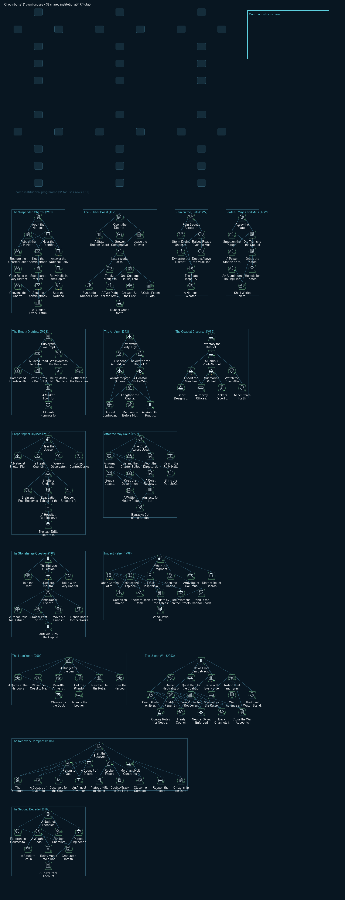
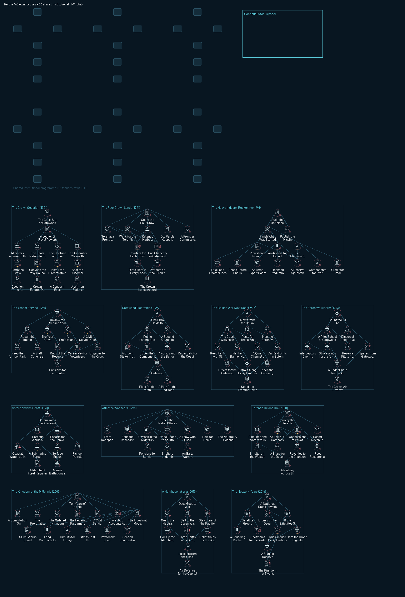

National depth: bespoke trees for review
Offline evidence; not an engine screenshot. Native untested (#8).
Chopinburg (CHO)
161 own focuses, 15 branches, 36 shared institutional focuses, 13 events, 56 ideas, 6 offices.

| Branch | Era | Focuses | Filter |
|---|
| The Suspended Charter | 1991 | 13 | FOCUS_FILTER_POLITICAL |
| The Rubber Coast | 1991 | 12 | FOCUS_FILTER_INDUSTRY |
| Rain on the Flats | 1992 | 7 | FOCUS_FILTER_STABILITY |
| Plateau Mines and Mills | 1992 | 8 | FOCUS_FILTER_INDUSTRY |
| The Empty Districts | 1993 | 9 | FOCUS_FILTER_INTERNAL_AFFAIRS |
| The Air Arm | 1993 | 9 | FOCUS_FILTER_AIR_XP |
| The Coastal Dispersal | 1995 | 9 | FOCUS_FILTER_NAVY_XP |
| Preparing for Ulysses | 1996 | 11 | FOCUS_FILTER_STABILITY |
| After the May Coup | 1997 | 12 | FOCUS_FILTER_POLITICAL |
| The Stonehenge Question | 1998 | 10 | FOCUS_FILTER_POLITICAL |
| Impact Relief | 1999 | 13 | FOCUS_FILTER_STABILITY |
| The Lean Years | 2000 | 9 | FOCUS_FILTER_INTERNAL_AFFAIRS |
| The Usean War | 2003 | 16 | FOCUS_FILTER_WAR_SUPPORT |
| The Recovery Compact | 2006 | 14 | FOCUS_FILTER_POLITICAL |
| The Second Decade | 2011 | 9 | FOCUS_FILTER_RESEARCH |
Offices: Charter Council (democratic / centrism); Administrative Directorate (neutrality / oligarchism); National Renewal Committee (fascism / ultranationalism); Coastal Defence Directorate (neutrality / stratocracy); Recovery Assembly (democratic / social_democracy); Council of District Governors (neutrality / conservatism_na)
Sample focuses
- Audit the National Administration
- Chopinburg enters 1991 under a National Administration that governs with the election calendar suspended and a public split between loyal administrators and a loud nationalist movement. Before anyone argues about the next government, the ministries must show what they spend and who they employ. The audit costs months of goodwill inside the civil service.
- Count the District C Groves
- District C holds most of the country's rubber, spread across jungle groves behind three small harbours. Nobody in the capital knows how many trees are tapped, who owns them or how much latex leaves without paying duty. A census of every grove, made by surveyors on foot during the dry weeks, is the first step to a policy.
- Rain Gauges Across the Flats
- The capital, District B, District E and the desert hinterland all share the low country of the flats, where heavy rain turns roads to mud for weeks at a time. A network of rain gauges and flood wardens in every district records where water gathers and when it peaks. It is cheap, dull and overdue work.
- Assay the Plateau Seams
- District F sits on a dry plateau with oil, aluminium ore and iron that support two civilian works and two arms works. Nobody has mapped how long the seams will last or how deep they run. An assay by the mines ministry, with drilling teams and a field laboratory, decides how much to invest above ground.
- Survey the Two Empty Districts
- District B and the desert hinterland together hold a large share of the country's land and almost none of its buildings, roads or works. Before the state spends money there, a survey team records water, soil, tracks and the few settlements that exist. The survey takes a full year and decides which district gets the first road.
- Review the Forty-Eight Fighters
- The air arm has forty-eight fighters, one air base at the capital and too few instructors to train replacements. A review counts which airframes can fly, which pilots are current and what spares exist. The findings will embarrass the service, but they set the size of every later air budget.
- Inventory the District E Yards
- District E's three dockyards build and repair the navy's three destroyers, its single submarine and the merchant hulls of the coast trade. Their slipways are old and their order book is thin. An inventory of yards, hulls and skilled workers shows what the navy can maintain and what it should stop pretending to own.
- Hear the Ulysses Warning
- In April 1996 Central Usea announced that the asteroid Ulysses would strike the Earth, and fragments could fall anywhere. The country must decide what to tell its people, what to build and what to stockpile in the years before the pass. The first decision is how openly the government speaks about the danger.
- The Coup Across Usea
- On 30 May 1997 a coup broke out across Usea, and Unified Command moved to defeat it. At home the army's units must report their loyalty and the government must decide how far to trust them. The question is not only who rules this year, but how the army answers to civilians afterwards.
- The Railgun Question
- In June 1998 Central Usea completed Stonehenge, eight railguns in neutral San Salvacion meant to break up the asteroid's fragments. This country is not part of the project and cannot know whether the guns will protect its coast. The government must decide how far to rely on them and what to build in case they fail.
- When the Fragments Fell
- On 8 July 1999 Ulysses passed the Roche limit and broke apart, and fragments fell across the world. Reports from across Usea describe damaged towns, closed ports and families on the move. The government must organise relief at home and decide how to receive people arriving from elsewhere.
- A Budget for the Lean Years
- Shelters, reserves, relief and lost trade have emptied the treasury, and buyers for rubber and ore are scarce after the impact. A lean budget cuts new projects, freezes salaries and delays the districts' grants. It keeps the state solvent, but every district will feel the cuts and blame the capital for them.
- News From San Salvacion
- In the summer of 2003 Erusea invaded neutral San Salvacion and seized Stonehenge, and in August Central Usea founded ISAF to resist. The railguns built to protect the continent are now turned against aircraft. The country must choose its own posture without sending its small forces abroad.
- Draft the Recovery Compact
- Fifteen years of reform, warning, impact and war have left the country tired, indebted and still standing. A recovery compact sets out what the next decade must deliver: rebuilt harbours, a working plateau, settled districts and an honest government. Drafting it forces every faction to say what it wants and what it will give up.
- A National Technical College
- The country has spent twenty years hiring engineers, controllers and chemists from abroad or training them in a hurry. A national technical college in the capital, with workshops at the yards, the latex works and the plateau mills, trains them at home. It takes a decade to repay itself and competes with schools for every teacher.
Sample event: The Administration Audit
The audit began in the finance ministry, where clerks carried ledgers up from basement stores that had not been opened since the election calendar was suspended. Within a month the auditors had found offices with more staff on paper than chairs at their desks, district grants approved by officials who no longer held their posts, and contracts renewed year after year without a single tender.
The findings travelled faster than the auditors. In the capital, nationalist speakers read the worst entries aloud in their halls and demanded a cleaner state. Senior administrators answered that the ministries had kept the country fed, paid and defended through difficult years, and that a handful of bad ledgers did not make a failed government. The district delegates waiting in the capital mostly asked when the roads would come.
The National Administration now has to decide what the audit is for. It can publish everything and let the public judge, accepting the damage to its own standing. It can keep the findings inside government and repair the worst offices quietly. Either way, the audit has ended the comfortable assumption that nobody would ever look.
Events: The Administration Audit; The Grove Census; Ore Samples From the Plateau; Two Districts Without Roads; The Yards in District E; The Asteroid Warning; News of the May Coup; The Directorate Takes the Ministries; The Railgun Debate; The Night of the Fragments; War Comes to Usea; The War Accounts; The Recovery Compact
Sources: Provisional gameplay: Every Chopinburg focus, idea, office and event is provisional gameplay. It is grounded in the inherited 1991 history (suspended elections, CNEA membership, capital state 4), the six 1991 states and their resources and buildings, and the world-start calibration (coastal dispersal role, three destroyers, one submarine, forty-eight fighters). No Chopinburg-specific official source exists for 1991-2020.; Mod provenance: District captions B, C, E and F come from the regional label pass; state 512 has no district caption and is called the desert hinterland in text. The flats weather (heavy rain, mud) is read from strategic region 71.; Official: Usea-wide dates used only as dated pressures and focus gates; the Chopinburg response to each is provisional.; Mod provenance: The Chronicle 2019 / 05.30 row mentions Chopinburg airspace but gives Chopinburg no political status; the ledger keeps that place name unmapped to the CHO tag, so this tree does not use it.
Perbla (PBL)
143 own focuses, 13 branches, 36 shared institutional focuses, 13 events, 58 ideas, 4 offices.

| Branch | Era | Focuses | Filter |
|---|
| The Crown Question | 1991 | 14 | FOCUS_FILTER_POLITICAL |
| The Four Crown Lands | 1991 | 11 | FOCUS_FILTER_INTERNAL_AFFAIRS |
| The Heavy Industry Reckoning | 1991 | 13 | FOCUS_FILTER_INDUSTRY |
| The Year of Service | 1991 | 11 | FOCUS_FILTER_MANPOWER |
| Gatewood Electronics | 1992 | 10 | FOCUS_FILTER_RESEARCH |
| The Belkan War Next Door | 1995 | 12 | FOCUS_FILTER_WAR_SUPPORT |
| The Serenava Air Arm | 1993 | 9 | FOCUS_FILTER_AIR_XP |
| Sofern and the Coast | 1993 | 9 | FOCUS_FILTER_NAVY_XP |
| After the War Years | 1996 | 11 | FOCUS_FILTER_STABILITY |
| Terentio Oil and Ore | 2000 | 10 | FOCUS_FILTER_INDUSTRY |
| The Kingdom at the Millennium | 2003 | 14 | FOCUS_FILTER_POLITICAL |
| A Neighbour at War | 2010 | 9 | FOCUS_FILTER_WAR_SUPPORT |
| The Network Years | 2016 | 10 | FOCUS_FILTER_RESEARCH |
Offices: Crown Ministry of the Chamber (monarchism / constitutional_monarchy); Privy Council of the Crown Lands (monarchism / absolutism); Crown Directorate of Order (monarchism / perblan_totalitarianism); Assembly Government of the Four Lands (democratic / social_democracy)
Sample focuses
- The Court Sits at Gatewood
- The crown opens the 1991 session at Gatewood with a kingdom that runs on arms plants, a service year and four crown lands that answer to one throne. Before any reform, the court has to agree who actually governs. Opening the question costs the palace its habit of deciding in private, but it buys every faction a hearing.
- Count the Four Crown Lands
- Perbla is a union of four crown lands, Perbla proper, Serenava, Terentio and Relentio, held together by one throne and a tangle of old charters. Nobody in Gatewood has an accurate count of their roads, schools or tax rolls. A full census costs a season of clerical work and tells every land exactly what it is owed.
- Audit the Unfinished Plants
- The arms sector that dominates the economy is full of half-built halls, idle presses and contracts paid but never delivered. An audit team from the treasury walks every plant and prices what it would take to finish or close it. The audit annoys the trusts and costs a year of political quiet, but nothing else can start without it.
- Review the Service Year
- For more than a century every young Perblan has served a year in uniform, a policy built to match the size of Osea's forces. The year produces a vast reserve and a heavy bill for barracks, rations and lost labour. A royal review asks whether the old answer still fits a kingdom that wants to grow.
- One Firm Holds the Kingdom
- The national electronics firm supplies almost every circuit used by the army and by civilian industry. Its success is a national boast and a national risk. Before choosing a policy, ministers commission a frank study of what the kingdom would lose if the firm stumbled. The study costs goodwill with a board that dislikes outside eyes.
- News from the Belkan War
- When fighting breaks out around Belka in 1995, Perbla is not a party to it, but it is close to every side. Osea is its largest neighbour and Belka its oldest friend. The crown puts the frontier commands on watch and opens a war room at Gatewood. Watching costs fuel, overtime and nerves; ignoring the war would cost far more.
- Count the Air Arm Airframes
- The air arm is small, old and concentrated on the giant Serenava airfields that face Osea. An honest count shows how many fighters can actually fly, how many pilots are current and how much fuel the stores hold. The answer embarrasses the air staff. It also gives the crown a real baseline for every later decision.
- Sofern Yards Back to Work
- Sofern's yards build and repair almost every hull the kingdom owns, but half the slipways stand idle for lack of orders. A steady programme of refits and small escorts keeps the yards working and their skilled crews employed. The navy gets ships back faster. The treasury commits to a shipbuilding budget it cannot easily cut later.
- Open the Relief Offices
- The war years leave the kingdom with displaced families, returning reservists and businesses that lost foreign customers. Relief offices in each crown land handle housing, jobs and small grants under one roof. They cost money and attract complaints from every side. They also turn scattered grievances into cases that can be closed.
- Survey the Terentio Fields
- The Terentio desert holds oil and bauxite that the kingdom has barely tapped, worked by a few old rigs and the arms plants that sit on the same ground. A geological survey maps the fields properly and rebuilds the track to the main deposits. The survey takes two dry seasons, and its maps will decide who gets rich.
- Ten Years of the New Order
- A decade after the crown question was first opened, the government commissions a public review of how the kingdom governs itself: what it built, whom it failed and what it now costs to run. The panel is chosen by lot rather than from the government's friends. Its findings will frame every political choice of the new century.
- Osea Goes to War
- In September 2010 Osea, the large neighbour the service year was built to match, is suddenly at war with Yuktobania. The kingdom is not a belligerent, but Osean ports, buyers and warships are part of its daily life. The security council convenes to judge what the war means for Perblan trade, shipping and safety.
- A National Data Network
- Ministries, banks, factories and military commands now run on networks that depend on foreign satellites and undersea cables. A national data network with domestic routing and backup links keeps essential services online under pressure. Building it takes years of digging and fibre. The electronics sector wins most contracts, and complains about the deadlines anyway.
Sample event: The Crown Question
The session opens in the old throne hall at Gatewood with the usual music and an unusual agenda. For the first time in living memory the clerks have placed the government itself on the order paper. Perbla is a kingdom of four crown lands held together by one throne, a century-old service year and an economy that leans on its arms plants. Each of those pillars now has a faction that wants it rebuilt.
The constitutional camp wants ministers who answer to an elected chamber. The palace party wants the seals returned to a privy council that can act without waiting for votes. A harder faction speaks of order above all, of a crown that governs by decree because elected governments always drift back to greed. Deputies from the outer lands ask whether the crown needs to govern at all, or only to reign.
None of these camps commands a majority today. What the court decides in this first session is not which answer wins, but how the question will be argued: in the open, with the chamber and the press watching, or behind the palace doors. Either way, the arms trusts, the officer corps and the four lands are already counting their friends.
Events: The Crown Question; Four Lands, One Throne; The Unfinished Plants; One Firm, One Kingdom; The Service Year Debate; War Beyond the Frontier; The Old Alliance Debated; Ulysses in the Night Sky; Oil Under Terentio; Ten Years On; The Monday Morning Exercise; A Neighbour at War; Drones Over the Harbours
Sources: Mod provenance: Inherited Perbla state: monarchism ruling at 70 percent popularity with a constitutional_monarchy leader; ideas PBL_mandatory_service, PBL_eco_crisis_1, PBL_south_belka_munitions, PBL_federal_kingdom and PBL_electronics. The tree builds on these ideas and never removes or edits them.; Mod provenance: The inherited intervention path: perbla_intervention.1 to .3, fired by a Belkan decision only when PBL holds pbl_help_belka_flag (a 1 percent roll at game start), plus the historical_friends (BLK) and historical_enemies (OSE) opinion modifiers. The 1995 branch debates the old alliance but commits no forces and never sets that flag.; Mod provenance: perblan_totalitarianism is an archive monarchism sub-ideology (can_be_randomly_selected = no); used only for the unnamed Crown Directorate of Order office.; Mod provenance: Geography: 1991 states 112, 173, 207, 209, 236, 389 (capital), 571, 581, 592, 597 and 601; crown-land cores REL (173, 207, 236, 597), TER (209, 571) and SER (581); DAK claims on 209 and 571; land neighbours OSE (via 581), DAK and ARK, computed from map/provinces.bmp. Place names come from existing state and victory point localisation.; Official: Date anchors for regional pressure only: the Belkan War breaks out (1995 / 03.25); the Ulysses warnings (1994 / 12.10 and 1996 / 04.20); the Circum-Pacific War begins (2010 / 09.27); drone strikes on four Osean naval ports as the Lighthouse War begins (2019 / 05.15); satellites destroyed and Usean network communications cut (2019 / 09.19). No Perblan role in any of them is claimed.; Provisional gameplay: All Perblan focuses, ideas, offices, buildings, flags and events in this spec. No named people; offices are collective and unnamed; no border, core, war, annexation or faction effects.